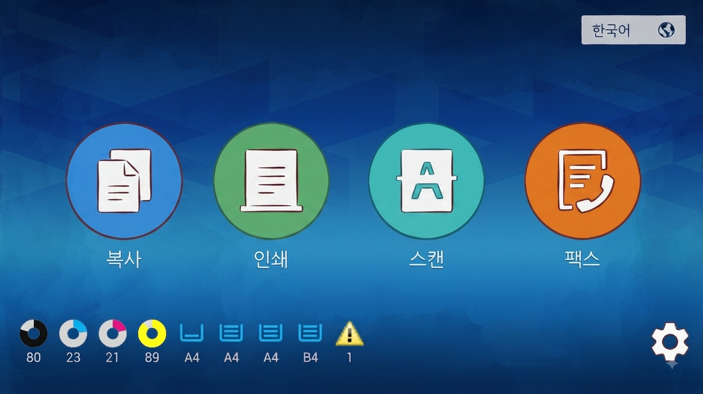
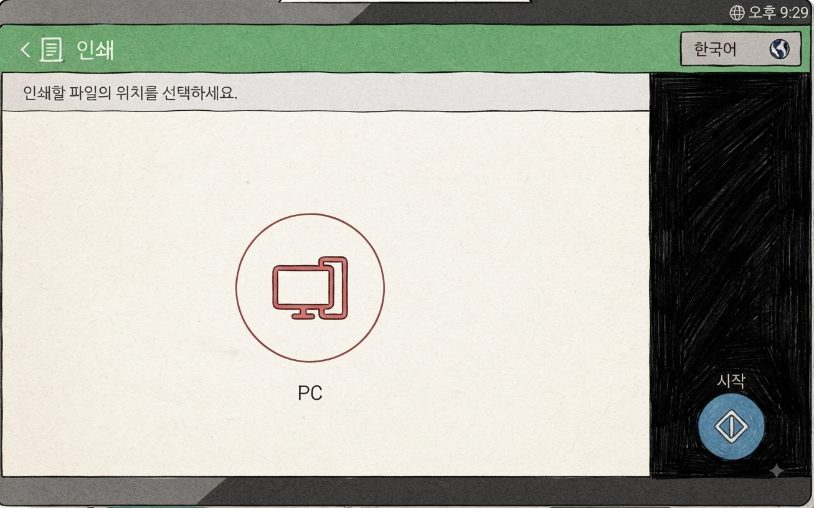
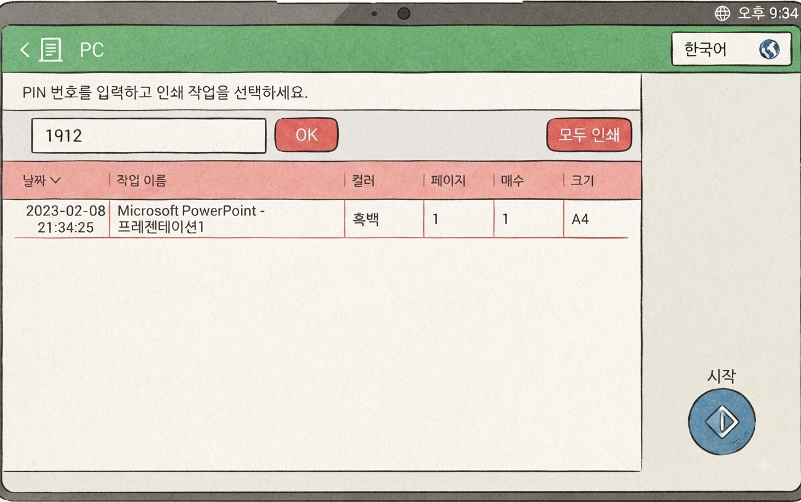
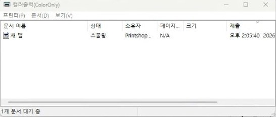
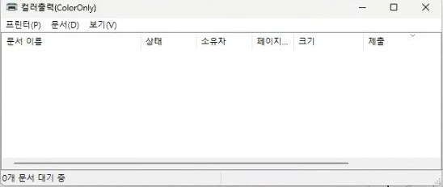

GUIDE · PRINT
Cách in
Cách mở tệp của bạn trên máy tính cửa hàng và in ra giấy. Có cả cách cài đặt in cho từng chương trình.
Cách mở tệp của bạn trên máy tính cửa hàng và in ra giấy. Có cả cách cài đặt in cho từng chương trình.
Đây là dịch vụ mở tệp của bạn trên máy tính cửa hàng và in ra giấy. Mở tệp trên máy tính và gửi lệnh in. Sau đó đến máy in đa năng, tìm tài liệu bằng mã PIN và thanh toán thì sẽ in ra.
⚠️ Sau khi gửi lệnh in trên máy tính, hãy đến máy in đa năng, tìm bằng mã PIN đã nhập trên máy tính và thanh toán. Lúc đó mới in ra. Nếu chưa thanh toán ở máy quẹt thẻ của máy in đa năng thì sẽ không in ra.
※ Dù đã trả phí trên máy tính (ví dụ phí cấp giấy tờ), việc in vẫn phải thanh toán riêng ở máy quẹt thẻ của máy in đa năng mới in ra.
Nếu đổi máy in sau khi đã cài tùy chọn, bạn phải cài lại tất cả từ đầu. Đổi máy in thì mọi tùy chọn đều thay đổi.
❌ Trường hợp nguy hiểm nhất
Cài tùy chọn mà chưa chọn máy in → sau đó đổi từ đen trắng sang màu → tùy chọn đã thay đổi nhưng không kiểm tra → tùy chọn bị áp dụng sai và in ra bị lỗi.
✅ Luôn theo thứ tự: chọn máy in → cài tùy chọn → xem trước → nút in. Nếu đã đổi máy in, hãy kiểm tra lại tùy chọn từ đầu.

Mở tệp trên máy tính → [인쇄] (In) → chọn máy in
Đen trắng / Màu / Chứng chỉ (PIN9999)

Hãy nhập 4 số cuối số điện thoại của bạn
Máy in chứng chỉ sẽ tự điền 9999


Đến máy in đa năng trong cửa hàng → chọn menu [인쇄] (PRINT) → chọn [PC]
Nếu màn hình tắt, hãy chạm vào màn hình để bật

Nhập mã PIN đã đặt trên máy tính và bấm [확인] (Xác nhận) → chọn tệp trong danh sách → bấm [시작] (Bắt đầu)

Kiểm tra tổng tiền · số trang · màu hay không
Nếu đúng, bấm [확인] (Xác nhận)

Khi máy quẹt thẻ phát tiếng, hãy cắm thẻ IC (tín dụng/ghi nợ),
Samsung Pay thì áp vào mặt có biểu tượng Wi-Fi
Những điều hay bị bỏ sót khi in.
Nếu đã chọn máy in màu [컬러출력], hãy chắc chắn bản xem trước cũng có màu. Nếu có nhiều trang, hãy kiểm tra tất cả các trang.
Màu in ra có thể khác màu trên màn hình máy tính. Cùng một tệp, màu mỗi trang cũng có thể khác nhau.
Trước khi trả tiền, máy in đa năng sẽ hiện màn hình thông tin thanh toán [과금정보]. Nếu khác với điều bạn biết, tuyệt đối đừng thanh toán. Hãy kiểm tra lại tùy chọn in trên máy tính.
Đây là chương trình PDF trên máy tính cửa hàng (Adobe Acrobat Reader). Mở tệp PDF rồi bấm biểu tượng máy in hoặc [파일] (Tệp) → [인쇄] (In), hoặc bấm cùng lúc Ctrl và P. Màn hình in bên dưới sẽ hiện ra.

Bấm đúp vào tệp trên máy tính để mở.
Tệp trong email hoặc USB: hãy lưu ra màn hình nền máy tính trước.
Không nhất thiết phải là màn hình nền. Chỉ cần lưu vào máy tính và nhớ đã lưu ở đâu. Đến chỗ đó và bấm đúp vào tệp để mở. Màn hình nền là chỗ dễ tìm nhất.
📱 Tệp ở trong điện thoại? Bấm vào liên kết dưới đây để xem cách lưu tệp vào máy tính trước.
Xem cách lưu tệp điện thoại vào máy tính (tiếng Hàn) →


Máy tính cửa hàng chỉ có trình xem, không chỉnh sửa được. Nếu khác với máy đã làm tệp, màn hình có thể trông khác.

Bấm đúp vào tệp trên máy tính để mở.
Tệp trong email hoặc USB: hãy lưu ra màn hình nền máy tính trước.
Không nhất thiết phải là màn hình nền. Chỉ cần lưu vào máy tính và nhớ đã lưu ở đâu. Đến chỗ đó và bấm đúp vào tệp để mở. Màn hình nền là chỗ dễ tìm nhất.
📱 Tệp ở trong điện thoại? Bấm vào liên kết dưới đây để xem cách lưu tệp vào máy tính trước.
Xem cách lưu tệp điện thoại vào máy tính (tiếng Hàn) →


Cách cài đặt in cho tệp Word · Excel · PowerPoint. Mỗi chương trình trông hơi khác, nhưng đều vào [파일] (Tệp) → [인쇄] (In).

Bấm đúp vào tệp trên máy tính để mở.
Tệp trong email hoặc USB: hãy lưu ra màn hình nền máy tính trước.
Không nhất thiết phải là màn hình nền. Chỉ cần lưu vào máy tính và nhớ đã lưu ở đâu. Đến chỗ đó và bấm đúp vào tệp để mở. Màn hình nền là chỗ dễ tìm nhất.
📱 Tệp ở trong điện thoại? Bấm vào liên kết dưới đây để xem cách lưu tệp vào máy tính trước.
Xem cách lưu tệp điện thoại vào máy tính (tiếng Hàn) →


PDF làm bằng Canva · Miricanvas · chương trình thiết kế web · ứng dụng ghi chú iPad thì hãy mở bằng trình duyệt, kiểm tra ở bản xem trước rằng màu hiện đầy đủ rồi mới in.

Tệp PDF được cài để mở bằng Acrobat khi bấm đúp. Muốn mở bằng trình duyệt (Edge · Chrome), hãy làm một trong hai cách dưới đây.
① Trước tiên mở Edge hoặc Chrome, rồi kéo tệp thả vào cửa sổ đó.
② Bấm chuột phải vào tệp, chọn [연결 프로그램] (Mở bằng) → Edge hoặc Chrome.
Tệp trong email hoặc USB: hãy lưu ra màn hình nền máy tính trước. Chỉ cần nhớ đã lưu ở đâu. Màn hình nền là chỗ dễ tìm nhất.
📱 Tệp ở trong điện thoại? Bấm vào liên kết dưới đây để xem cách lưu tệp vào máy tính trước.
Xem cách lưu tệp điện thoại vào máy tính (tiếng Hàn) →
Nếu tệp đang mở bằng Edge, làm theo cách của Edge bên dưới. Nếu mở bằng Chrome, làm theo cách của Chrome (Bước 1–5). Sau khi nhập mã PIN và kiểm tra cửa sổ lệnh in (Bước 5), hãy kéo xuống phần In ở máy in đa năng. Edge · Chrome · ALSee đều giống nhau.
Khi tệp cần in đang mở trên trình duyệt, bấm [인쇄] (In) hoặc biểu tượng máy in.


Ở ô máy in, chọn máy in [흑백출력] (đen trắng) hoặc [컬러출력] (màu).

Bấm [기타 설정] (Cài đặt khác) để chọn hoặc kiểm tra các tùy chọn như khổ giấy, 2 mặt/1 mặt, số trang trên 1 mặt.

Bấm nút [인쇄] (In) ở phía dưới, ô nhập mã PIN sẽ hiện ra. Hãy nhập 4 số bất kỳ. Nên dùng 4 số cuối số điện thoại của bạn.


Hãy xem cửa sổ lệnh in [흑백출력] (đen trắng) hoặc [컬러출력] (màu).
Nếu danh sách trống, lệnh in đã được gửi đến máy in đa năng.
Nếu vẫn còn, hãy chờ đến khi biến mất.
Khi tệp đang mở bằng Chrome, bấm [인쇄] (In) hoặc biểu tượng máy in, hoặc bấm cùng lúc Ctrl và P.
Cửa sổ cài đặt in sẽ hiện ra. Bên trái là bản xem trước, bên phải là tùy chọn in.


Trong phần cài đặt bên phải, [대상] (Đích) là chỗ chọn máy in. Bấm vào sẽ hiện mặc định máy in [흑백출력] (đen trắng).
Nếu không thấy [컬러출력] (màu), bấm [더보기...] (Xem thêm) bên dưới. Danh sách đầy đủ sẽ hiện ra.
Chọn máy in [흑백출력] (đen trắng) hoặc [컬러출력] (màu).

Bấm [설정 더보기] (Cài đặt khác) sẽ hiện các tùy chọn như khổ giấy, in 2 mặt, số trang trên 1 tờ. Hãy chọn hoặc kiểm tra theo ý muốn.
Bấm nút [인쇄] (In) ở phía dưới, ô nhập mã PIN sẽ hiện ra. Hãy nhập 4 số bất kỳ. Nên dùng 4 số cuối số điện thoại của bạn.


Hãy xem cửa sổ lệnh in [흑백출력] (đen trắng) hoặc [컬러출력] (màu).
Nếu danh sách trống, lệnh in đã được gửi đến máy in đa năng.
Nếu vẫn còn, hãy chờ đến khi biến mất.
Dùng khi in ảnh hoặc tệp hình. Có thể xếp nhiều ảnh trên một tờ. Hãy mở ảnh bằng biểu tượng ALSee (알씨) trên màn hình nền máy tính cửa hàng.

Bấm đúp vào tệp trên máy tính để mở.
Tệp trong email hoặc USB: hãy lưu ra màn hình nền máy tính trước.
Không nhất thiết phải là màn hình nền. Chỉ cần lưu vào máy tính và nhớ đã lưu ở đâu. Đến chỗ đó và bấm đúp vào tệp để mở. Màn hình nền là chỗ dễ tìm nhất.
📱 Tệp ở trong điện thoại? Bấm vào liên kết dưới đây để xem cách lưu tệp vào máy tính trước.
Xem cách lưu tệp điện thoại vào máy tính (tiếng Hàn) →

Mở ảnh bằng ALSee rồi chọn [메뉴] (Menu) → [인쇄하기] (In) ở phía trên. Cũng có thể bấm cùng lúc Ctrl và P.

Chọn [컬러출력] (màu) hoặc [흑백출력] (đen trắng). Ảnh màu thì nhất định chọn [컬러출력] (màu).

Sau khi chọn máy in, cửa sổ in bên dưới sẽ hiện ra. Muốn đổi khổ giấy hoặc dọc/ngang, bấm [프린터 설정] (Cài đặt máy in) ở góc dưới bên trái.

Chọn khổ giấy (A4 · B4 · A3, v.v.) và dọc / ngang, rồi bấm [확인] (Xác nhận). Bạn sẽ quay lại cửa sổ in.

Bạn đã quay lại cửa sổ in. Ở thẻ [크기설정] (Kích thước), đánh dấu [용지 크기에 맞춤] (Vừa khổ giấy) để ảnh in kín giấy. Muốn giữ đúng tỉ lệ ảnh, chọn [용지 비율에 맞춤] (Vừa tỉ lệ giấy).

Ở thẻ [여백/위치] (Lề/Vị trí), chọn lề trên · dưới · trái · phải (mm) và vị trí đặt ảnh.

Ở thẻ [기타] (Khác), chọn số tờ cần in. Kiểm tra hết ở bản xem trước bên trái rồi bấm [인쇄] (In).
Bấm [인쇄] (In) sẽ hiện ô nhập mã PIN. Hãy nhập 4 số bất kỳ. Nên dùng 4 số cuối số điện thoại của bạn.
Hãy xem cửa sổ lệnh in [흑백출력] (đen trắng) hoặc [컬러출력] (màu).
Nếu danh sách trống, lệnh in đã được gửi đến máy in đa năng.
Nếu vẫn còn, hãy chờ đến khi biến mất.
Chứng chỉ TOEIC · TOEIC Speaking (YBM) thì trước tiên in trên máy tính bằng [증명서전용PIN9999] (máy in chứng chỉ). Nếu chọn máy in khác, máy tính sẽ bị treo!
Chứng chỉ chỉ in ra khi bạn ① gửi lệnh in trên máy tính bằng [증명서전용PIN9999], rồi ② tìm ở máy in đa năng bằng số 9999 và thanh toán.
Nếu không gửi lệnh in trên máy tính mà chỉ nhập 9999 ở máy in đa năng thì sẽ không có gì in ra.
Khi được cấp bảng điểm trên trang web TOEIC, chứng chỉ sẽ mở trong cửa sổ xem.

Bấm nút màu vàng [성적표 출력] (In bảng điểm) ở góc trên bên phải cửa sổ xem.
[테스트 출력] (In thử) chỉ để thử. Đừng bấm.
![Cửa sổ chọn máy in, chọn [증명서전용PIN9999] trong danh sách và bấm nút In](../images/print/cert-ui-printer.png?v=1)
Trong cửa sổ chọn máy in, chọn [증명서전용PIN9999] và bấm [인쇄] (In).
[증명서전용PIN9999] không hiện ô nhập mã PIN. Máy tự điền 9999 nên đó là bình thường.
Khi hiện đã in xong, phần trên máy tính là xong.
Ở máy in đa năng, bấm [인쇄] (In) → [PC] và nhập số 9999.
Khi danh sách hiện ra, chỉ chọn chứng chỉ của bạn, bấm [시작] (Bắt đầu) rồi thanh toán.
Đây là các bước làm sau khi nhập mã PIN trên máy tính và gửi lệnh in. Edge, Chrome và ALSee đều giống nhau.
Đến máy in đa năng và bấm [인쇄] (In) → [PC].
Ở ô mã PIN, nhập 4 số đã nhập trên máy tính rồi chạm [OK].
Khi danh sách hiện ra, hãy kiểm tra kỹ: tên tài liệu, thời gian, đen trắng/màu, 2 mặt/1 mặt, số trang, khổ giấy, v.v.
Xem có đúng tài liệu của bạn không, và tùy chọn in có đúng ý không.
Chạm vào tài liệu của bạn trong danh sách, rồi chạm nút [시작] (Bắt đầu).
Nếu có nhiều tài liệu, bấm [모두 인쇄] (In tất cả) ở phía trên, hoặc chỉ chạm những cái cần in rồi bấm [시작] (Bắt đầu).
Cuối cùng, màn hình thông tin thanh toán [과금정보] sẽ hiện ra. Kiểm tra kỹ mọi thứ, nếu giá tiền cũng đúng thì chạm [확인] (Xác nhận).
Khi máy quẹt thẻ phát tiếng, hãy cắm thẻ IC (tín dụng/ghi nợ), hoặc áp Samsung Pay vào.
Trang này được dịch từ tiếng Hàn. Nếu có chỗ nào chưa đúng, vui lòng báo cho chúng tôi qua Naver TalkTalk. Màn hình máy là tiếng Hàn — tên nút tiếng Hàn được ghi trong [ngoặc].